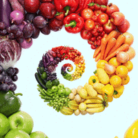

Go Back
How does colors affect us and the foods we eat ?
Brightly colored meals are often associated with good flavor and a balanced diet. The answer to this is pretty simple – when an individual finds the color of the food more appealing, they enjoy the food more. That's why meals in white, pink, red, blue, and other bright colors always seem to be more in demand.

Different colors affect taste in various ways. Foods with a bright red color can increase perceptions of sweetness and decrease perceptions of bitterness, which is why some manufacturers apply red coloring to the outside of fresh apples and tomatoes.